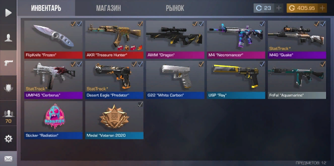

мой инвентарь сверху
1 трейд: п90"самурай"-закупка 200-190 продажа:255+
2 трейд: usp"stone gold" закупка: 78-70 продажа:110+
как ловить скины по 0.03
сначала выбераем скин, смотри разницу между ценой продажи и закупки
разница должна быть хоть пару копеек или голды (смотря цену самого скина)
потом перебиваем цену закупки пример:
закупка:10голды мы перебиваем цену и ставим 10.01
и смотреть чтоб не беребили вас, и ждем пока купим скин по 0.03
есть шанс купить скин по фулл прайсу
моя стрц в вк по вопросам туда